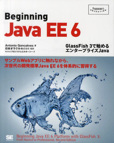

騙されたと思って
Java EE で
Web App を
作ってみた(作りたかった)
What to expect
Javaそんなにできない人が、本家のJava EE推しを信じて
ちょっとした Webアプリ作ったときの感想のお話
* javaバリバリ書いてる人がJava EEを他と比較した的な話はできません
あじぇんだ .....駆け足です
- 自己紹介
- 作ったものとJava成分
- 使ってみてのJava EEの印象
- まとめ
Who am I ?
- 本名は興梠 敬典
- 株式会社 アイセル所属
- 1987年8月19日生まれ
- Java 2010 ~ 2011
- 金融系システム(Web) with 俺俺FW on Servlet
- Struts, Seaser2 ...
- 流れるようなIFでファイル読み込みのLib作ったり
- JUnitでPLSQL強引にテストしてみたり
- 最近Java8とか話題が多くなってきたので...
作ったものと
Java EE 成分
Impress.js 用ツール
- Impress.jsスライドをgithub経由で投稿
- 投稿したスライドのCRUD
- WebSocketでスライド同期(音声&ポインタ)
- プレゼン予定とか投稿してUstream的な
- markdown2impress Editor
- マインドマップからimpress.jsスライド生成
要するにココ(JSpres.com)の劣化版
+ プレゼンのブロードキャスト
+ markdownでスライド作成
+ マインドマップからスライド作成
プレゼンの同期 : impress.io / markdownでスライド作成 : markdown2impress
作るの面白そう
色々な機能を試すのにちょうど良い
機能自体も新しいと良かったのに
案外面倒だった
- Impress.jsスライドをgithub経由で投稿
- 投稿したスライドのCRUD
- WebSocketでスライド同期
(音声&ポインタ)
プレゼン予定とか投稿してUstream的なmarkdown2impress Editorマインドマップからimpress.jsスライド生成
できているところまで...
プレゼンの動きだけ同期します
!!!!!!Chrome か Safariで見てね!!!!!
http://rocky-manobi.com:8080/ImpressShare-B/webresources/presentation/56
Twitterでつぶやきますね
ちゃっとはおもちゃですよ
Java EE成分
- MVC Frame Work -» JSF
- 永続化関連 -» JPA
- プレゼン同期 -» WebSocket (JSR-356)
- URIベースで動く処理 -» JAX-RS
* like twitter callback, access specific slide by URI
- ファイルの定期削除 -»: Batch App. (JSR352)
- その他 -»: CDI, EJB, Bean Validation
作業内容
- 設計と見た目 -» 一旦Railsで作成
*css/js は asset:compile して生成物を流用
- Java IDE -» NetBeans
- App Server -» glassfish4
- 期間 -» java作業 8/12〜 未完成
本家の推奨する形で作る（作りたかった）
ちなみにRails側はもうちょい実装できてる
*webに乗せただけ。本家 yoshiki様：https://github.com/yoshiki/markdown2impress
下の参考資料を武器に挑戦
-

会社にあったこの本とソース
- NetBeansのtutorial
- 偉大なる先人様方のブログ
WebSocket
本当に簡単にWebSocketできた！
チャットルーム的機能を簡単に実装できる
ライブラリがあるともっとうれしい
ただ、@PathParamsで取れる値、
最後に接続されたパラメータでこれまでの接続が全部上書きされる気が,,,
JAX-RS
@GETとか@Pathとか、宣言的で素敵。
今回はJSFを使用したけど、イケテルテンプレートと組み合わせてMVCのCとしても使えるみたいね。
ただ、メインのコントローラとして使うと
結局LLの得意分野に喧嘩売る事になりそう
JPA
結構簡単にDBを抽象化できた
データソースやらの設定xmlさん達もNetBeans先生が生成してくれるからありがたい。
- N + 1問大の回避はどうやるんだろう
- Objectベースのクエリ組み立ての柔軟性はイマイチ
- 自動生成されたコード、設定によってハマる現象...
JSF
判断できるほど触れませんでした。
NetBeansの「entityから...」で作ったCRUDページ(jsp)をxhtml,CDIベースに書き直した程度
- 自動生成されるタグのデザインへの影響が少し
- ページが状態を持つから、特定のページに直接URL指定で飛ぶの面倒？
- 確かにリッチなフロント組もうとすると大変かも
GlassFish & NetBeans
開発中はglassfishの存在を意識しないくらいに快適で素敵
eclipseからの乗り換えも案外楽。
壮大にハマりました。
最後の最後のデプロイで invalid data source '__PM'問題に出くわしたのは良い思い出。
僕みたいなのが
Java EE使うなら
先生がほしい..
なんの言語でもそうだけど、特にコレは...
「あまり書かなくても良いように」
「柔軟性を持たせたい」
を、実現する為に相当無理している感が...@
でも正しいレールを引いてやりさえすれば、
アプリ実装側の負担や学習コストは高くないかと...
*Javaで初めて1からWeb作った人の個人的な感想です
*アプリ実装者が楽をする為に苦労する形は素敵です。
まとめ
何もかにも新しくて大変でしたが、実際に触らないと分からない部分というのをたくさん得られた気分です。
- 触ってみると世間でDisられてる程悪くない
- IDE乗り換えは案外楽.便利なものを選択すべき
- 騙されてよかった
- 昔に比べてコード補完/Refactorが大変そう
- 皆が英語読むようになれば流行りそう
- impress使うとアニメーションがtoo matchに
最後に注意というかお詫び
- アプリはしばらく置いておくので玩具にどうぞ
- JSF のManagedBeanあたり壮大にミスってるから、セッション切れると落ちる処理あるよ。
- gitクローンは結構失敗するよ
- 日本語登録->サーバ再起動->文字化け 気にしないで
- 任意のJavascriptコードが実行可能だけど大丈夫？
- Websocketの同時接続数？なにそれ
これらの課題は次の玩具で...
ありがとうございました